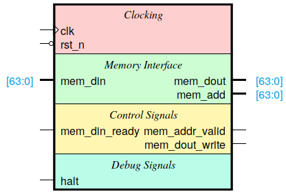

Raisin64.v¶

Raisin64.v¶
1 2 3 4 5 6 7 8 9 10 11 12 13 14 15 16 17 18 19 20 21 22 23 | /*
* Raisin64 CPU
*/
module raisin64 (
//# {{clocks|Clocking}}
input clk,
input rst_n,
//# {{data|Memory Interface}}
input[63:0] mem_din,
output[63:0] mem_dout,
output[63:0] mem_add,
//# {{control|Control Signals}}
output mem_addr_valid,
output mem_dout_write
input mem_din_ready,
//# {{debug|Debug Signals}}
input halt);
endmodule
|